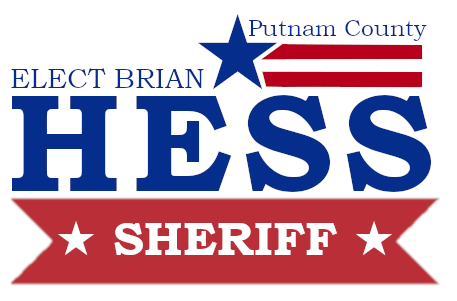
Integrity. Service. Community.
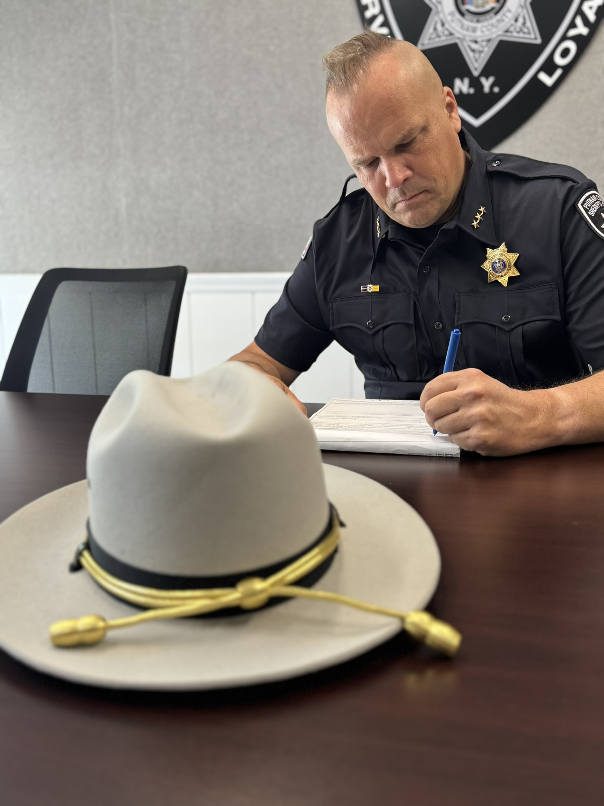
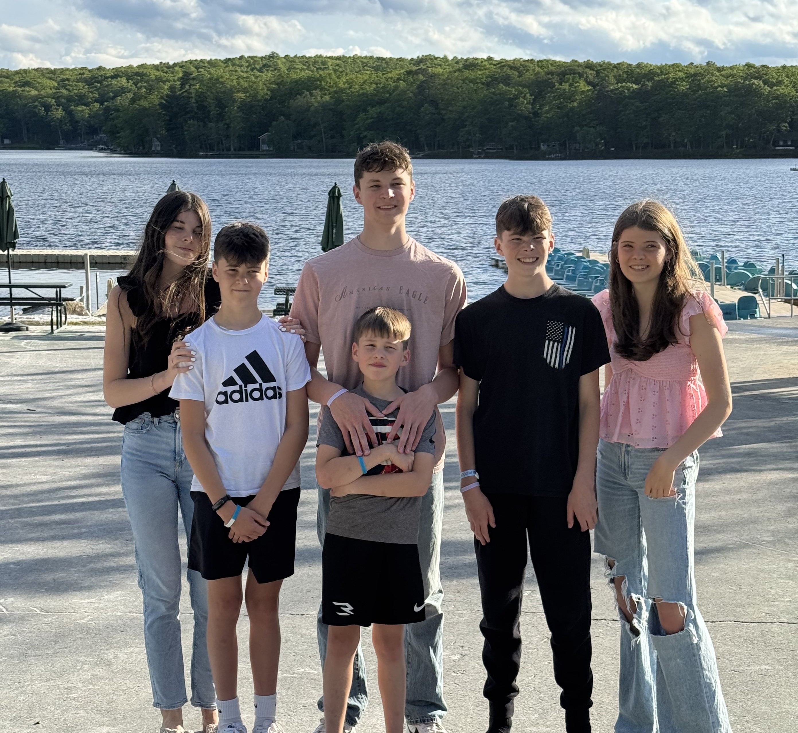
About Brian Hess
With a distinguished 25-year career in law enforcement, Brian M. Hess is a proven leader and innovator, ready to continue serving as Putnam County's next Sheriff. A lifelong conservative and devoted community member, Brian answered the call to leave the Westchester County Police Department when Sheriff Kevin McConville appointed him Undersheriff. Following Sheriff McConville's passing, Brian has stepped up as Acting Sheriff, ensuring stability, strength, and leadership during this time of transition.
His career is marked by innovation and results. As a Lieutenant in Westchester, Brian founded and commanded the Westchester-Putnam Real Time Crime Center, connecting over 65 law enforcement agencies and more than 5,500 professionals. He has led multi-agency task forces, developed cost-effective technologies now recognized across the country, and co-founded the region's first pursuit mitigation program.
Career Highlights
- 25+ years of progressive law enforcement experience
- Acting Sheriff of Putnam County, appointed Undersheriff by Sheriff McConville
- Founder & Commanding Officer of the Westchester-Putnam Real Time Crime Center
- Leader of a multi-agency task force of over 180 investigators
- Developer of cost-effective, nationally recognized public safety technologies
- Co-founder of the region's first pursuit mitigation program
A Vision for a Safer Putnam County
"My heart is here in Putnam County. My wife and I have lived in Patterson for over 12 years, raising our six children in this great community. I believe Putnam County deserves a Sheriff who combines boots-on-the-ground experience with a forward-thinking approach to modern policing. I am committed to strengthening our local law enforcement agencies, enhancing school safety, and ensuring every resident feels secure and protected."
Key Issues & Priorities
School & Youth Engagement
Strengthening partnerships with schools to provide education, mentorship, and positive role models for our youth.
Technology Integration
Leveraging modern technology to improve response times, enhance investigations, and provide better service to the community.
Crime Reduction Strategies
Implementing data-driven approaches to reduce crime rates and improve overall public safety in Putnam County.
News & Media Coverage
Brian Hess's innovative work with the Real Time Crime Center and multi-agency collaboration has been featured in major publications and has led to significant crime reduction across the region.
Technology Innovation
New Police Technology is Catching Suspects
The Journal News
Westchester's Real Time Crime Center is catching suspects almost as quickly as they commit crimes, thanks to innovative technology implementation.
Westchester County Police Technology Success
MOBOTIX
Lieutenant Brian Hess teamed up with local partners to establish the Real Time Crime Center, addressing crime across 40+ law enforcement agencies.
Uniting 46 Police Departments
Zello
Westchester County improved response times by uniting disparate police departments with advanced communication technology.
Smart Technology Makes A Big Impact
Officer Magazine
Advanced license plate recognition and AI technology implementation benefits law enforcement operations.
Crime Reduction Success
Narcotics Reduction Program Success
News 12 Westchester
Westchester's innovative narcotics reduction program helps reduce overdoses through collaborative enforcement.
Crime Down by Double Digits
Yonkers Times
Westchester County sees significant crime reduction through innovative policing strategies and technology.
Crime Rates See Significant Decline
News 12 Westchester
Westchester County crime rates show significant decline thanks to coordinated law enforcement efforts.
Joint Effort to Tackle Gun Violence
CBS New York
Westchester County unveils comprehensive joint effort to tackle gun and gang violence through multi-agency collaboration.
Real Time Crime Center Success Stories
Real Time Crime Tip Locates Stolen Vehicle
Yonkers Times
Westchester Real Time Crime Center tip leads to quick recovery of stolen vehicle and arrest.
Carjacker Nabbed with Real Time Crime Assist
Patch
Real Time Crime Center assists in rapid apprehension of carjacking suspect in coordinated operation.
Stolen Car Suspects Arrested in 12 Minutes
Patch
Quick response and technology coordination leads to rapid arrest of suspects in stolen vehicle case.
High-End Car Theft Suspect Nabbed
Patch
Coordinated multi-agency effort leads to apprehension of high-end car theft suspect across Westchester.
Photo Gallery
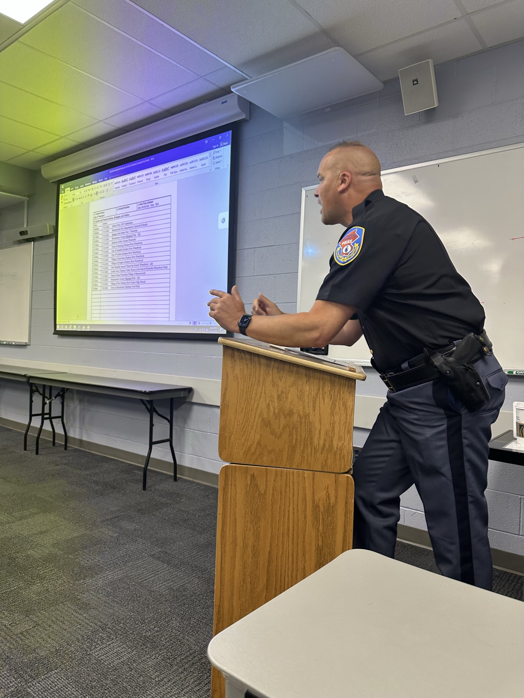
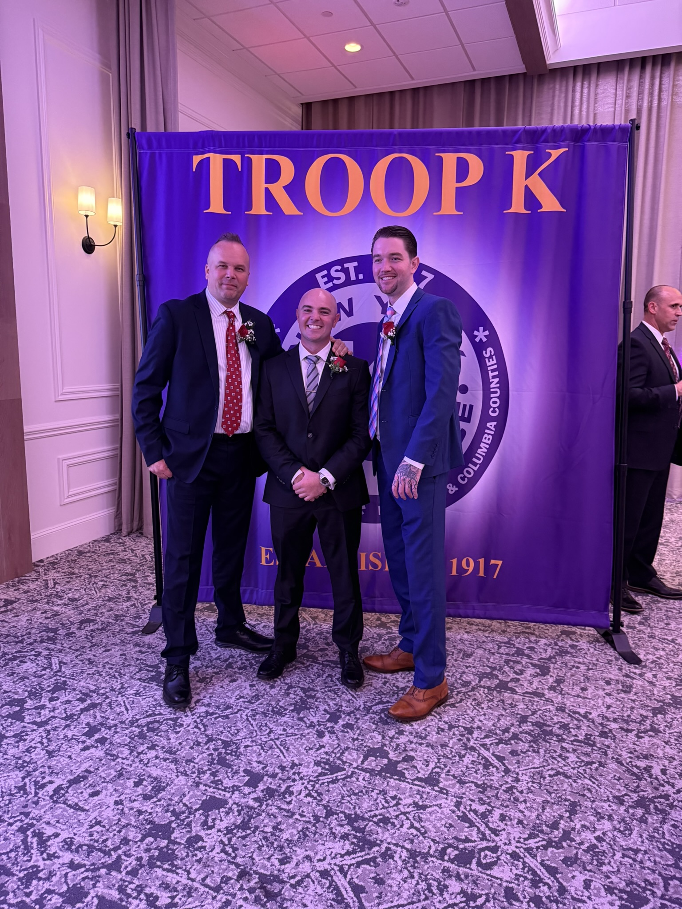
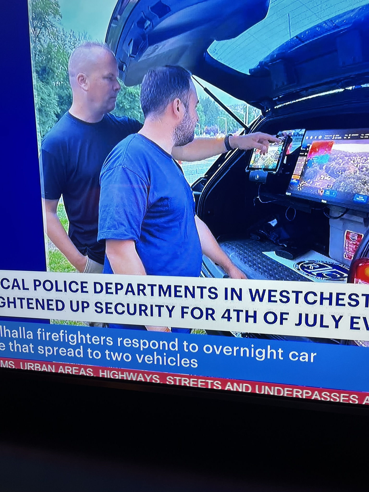
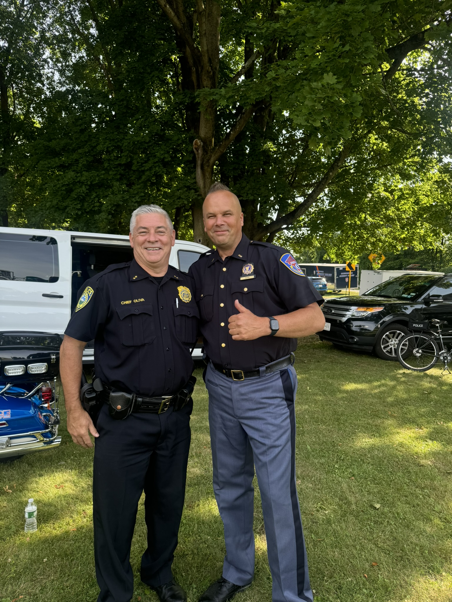
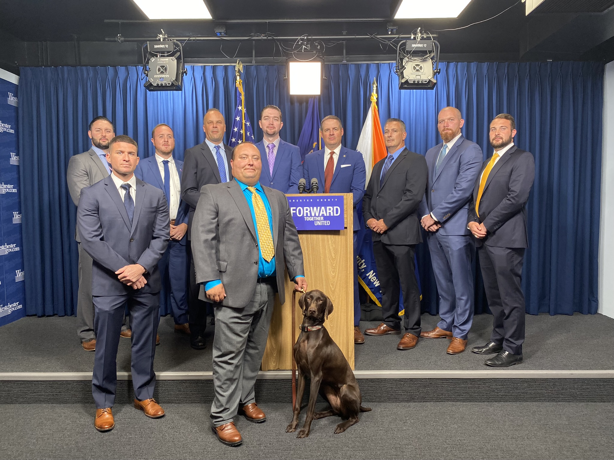

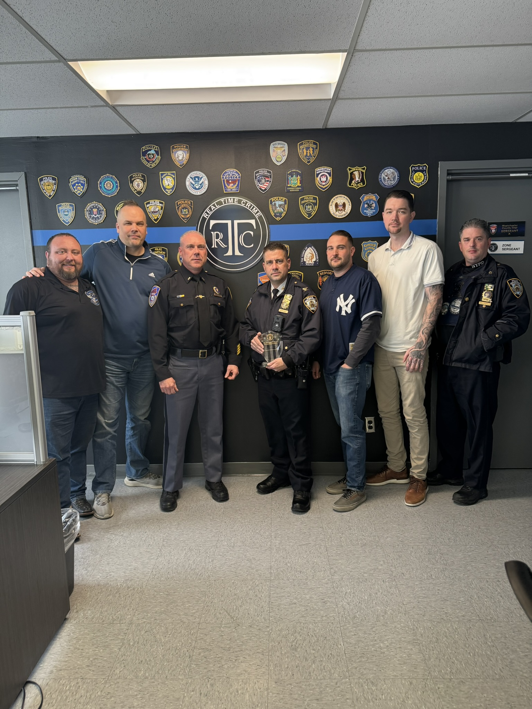
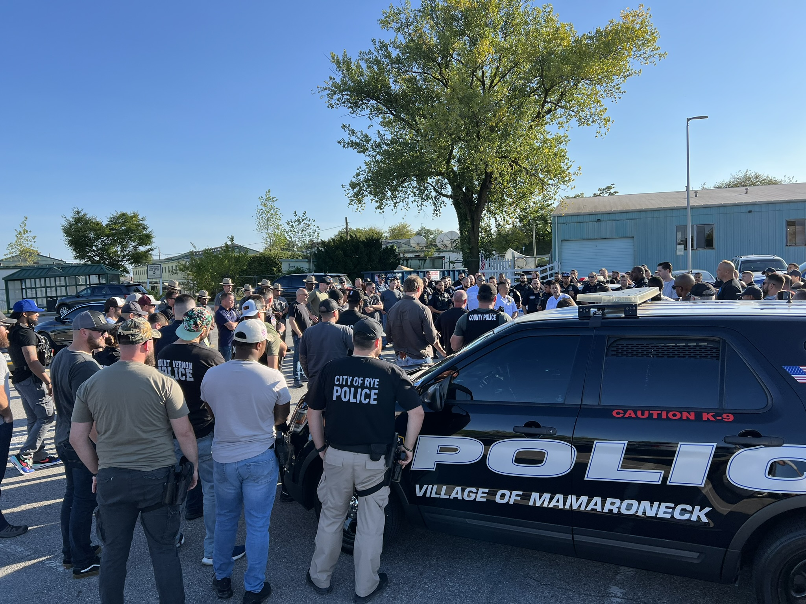
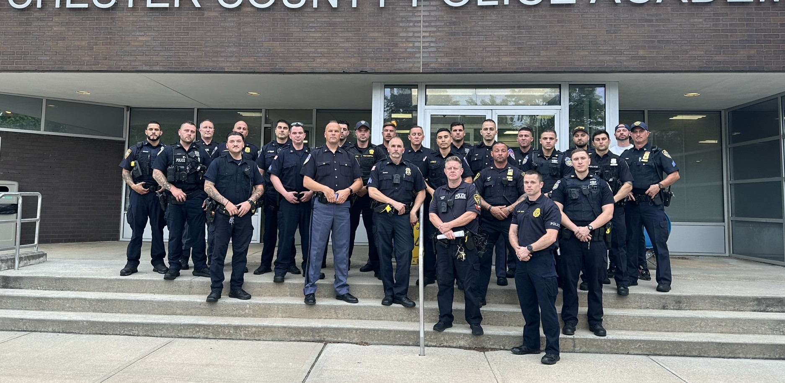
Support Our Campaign
Your contribution helps us build a safer, stronger Putnam County. Every donation, no matter the size, makes a difference in our community.
Custom Amount
Legal Notice (New York State Election Law)
New York State law requires us to collect and report the name, mailing address, occupation, and employer of each individual whose contributions exceed $99 in an election cycle.
Contributions are not tax-deductible for federal or state income tax purposes.
Corporate contributions are prohibited.
Contributions from foreign nationals are prohibited.
The maximum contribution allowed to a countywide candidate in Putnam County is $1,500 per individual per election (as set by the New York State Board of Elections).
Contributions must be reported to the NYS Board of Elections.
Join Our Campaign
By signing up, you agree to receive campaign updates. Your information will be kept confidential and used only for campaign purposes.
Why Join Our Campaign?
- Help build a safer Putnam County
- Support community-focused law enforcement
- Be part of positive change
- Connect with fellow community members